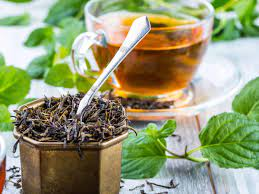
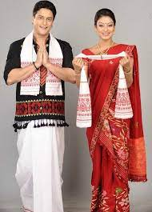

The cuisine of Assam is simple in its styles and ingredients. Assamese cuisine doesn't make excessive use of chillies, and in spite of little art in the style of cooking and the minimal use of colourful spices or oil, the food here is rich with exotic flavours.

Tea
The confluence of a variety of cultural influences in Assam has led to considerable diversity in Assamese cuisine. Local dishes mainly consist of rice and fish, and seafood is the central part of Assam?s local cuisine. Fish is prepared in all different textures and flavours and range from sour-curry fish Tenga to smoked and fried fish and fishlings that are seasoned with vegetables. Spices used here are subtle like cumin, coriander, mustard, ginger, garlic, fenugreek, panch foran and cardamom. Assam's Laksa (a spicy-sour fish base noodle soup) is almost as staple and popular as rice.
Preparations of exotic fruits and vegetables, as well as fish, duck and squab, are also favourite. Khar, Tenga, Pura, Poitbhat, Pitika, Paan are what Assamese Cuisine is known for and identified with. Another item without which the very definition of Assam is incomplete is Tea. One can indulge in the most excellent varieties of tea in the area and lose themselves in the refreshing and robust flavour and fragrance of the tea produced here.
Mekhela Chador, Assam The traditional dress for women is a wrapped around skirt with a sari pallu on the top. They have a different style of patterns and colors, but those have no correlation with the social status or style of occasion. Men wear a dhoti or loin cloth around their waist, up to their ankles and wear a chadar on top.